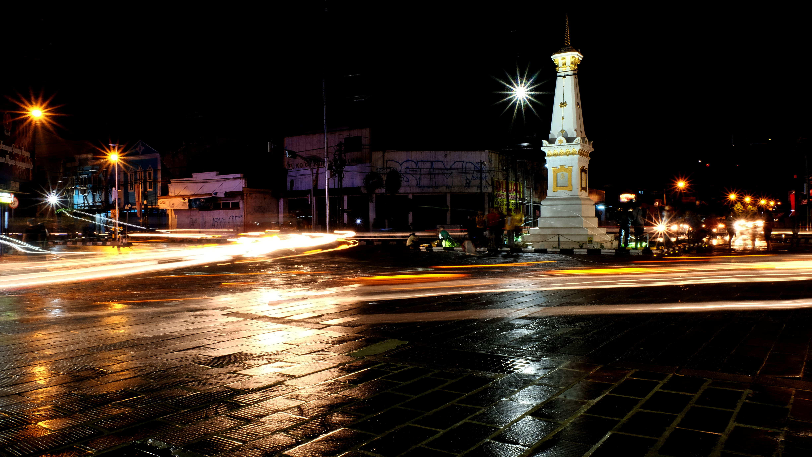
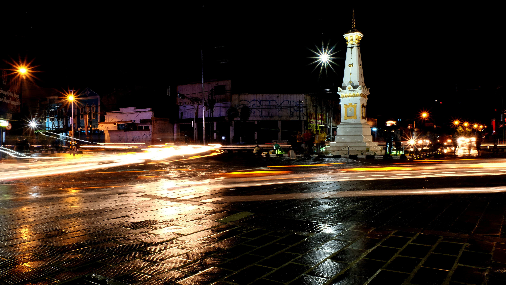
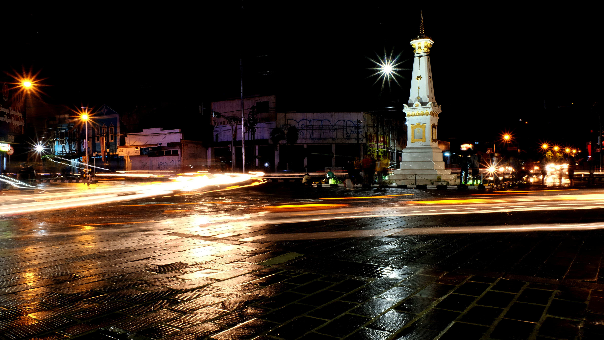
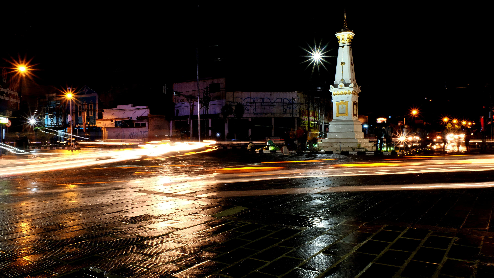

 


Pura Ulun Danu Beratan, a very unique temple because the location of the temple
Baca selengkapnya
Matrilineal kinship in Minangkabau is one - the unity of a large family.
Baca selengkapnya
is a monument or monument that is often used as a symbol or symbol of the city
Baca selengkapnya